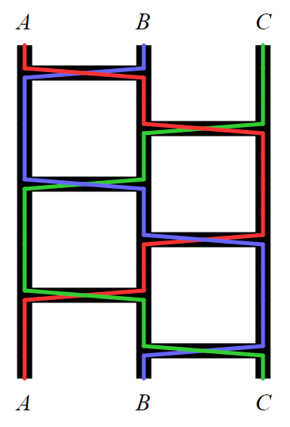

Project Euler 837
Project Euler 837
题目
Amidakuji
Amidakuji (Japanese: 阿弥陀籤) is a method for producing a random permutation of a set of objects.
In the beginning, a number of parallel vertical lines are drawn, one for each object. Then a specified number of horizontal rungs are added, each lower than any previous rungs. Each rung is drawn as a line segment spanning a randomly select pair of adjacent vertical lines.
For example, the following diagram depicts an Amidakuji with three objects (\(A\), \(B\), \(C\)) and six rungs:

The coloured lines in the diagram illustrate how to form the permutation. For each object, starting from the top of its vertical line, trace downwards but follow any rung encountered along the way, and record which vertical we end up on. In this example, the resulting permutation happens to be the identity: \(A\mapsto A\), \(B\mapsto B\), \(C\mapsto C\).
Let \(a(m, n)\) be the number of different three-object Amidakujis that have \(m\) rungs between \(A\) and \(B\), and \(n\) rungs between \(B\) and \(C\), and whose outcome is the identity permutation. For example, \(a(3, 3) = 2\), because the Amidakuji shown above and its mirror image are the only ones with the required property.
You are also given that \(a(123, 321) \equiv 172633303 \pmod{1234567891}\).
Find \(a(123456789, 987654321)\). Give your answer modulo \(1234567891\).
解决方案
将 \(A,B,C\) 分别标号为 \(1,2,3\)。一条 \(A-B\) 横杠会交换 \(1,2\)，记为\(x=(12).\)一条 \(B-C\) 横杠会交换 \(2,3\)，记为\(y=(23).\)从上到下的横杠序列对应于 \(S_3\) 中一个单词 \(w=w_1w_2\cdots w_{m+n}\)，其中 \(w_i\in{x,y}\)，并且恰有 \(m\) 个 \(x\) 与 \(n\) 个 \(y\)。该 amidakuji 的最终置换正是群乘积\(\pi(w)=w_1w_2\cdots w_{m+n}\in S_3.\)
因此
\[ a(m,n)=\#\{w\in\{x,y\}^{m+n}\mid \#x=m,\#y=n,\pi(w)=e\}. \]
\(S_3\) 中换位是奇置换，所以 \(\pi(w)\) 的奇偶性为 \((-1)^{m+n}\)。恒等 \(e\) 为偶置换，因此必要条件为\(m+n\equiv 0\pmod 2.\)若 \(m+n\) 为奇，则 \(a(m,n)=0\)。本题 \(m,n\) 均为奇数，所以 \(m+n\) 为偶数，计数非零。令\(K=\dfrac{m+n}{2}.\)
将单词 \(w\) 按相邻两位分成 \(K\) 个连续块：\((w_1w_2)(w_3w_4)\cdots(w_{2K-1}w_{2K}).\)注意到\(x^2=e, y^2=e.\)因此块为 \(xx\) 或 \(yy\) 时，对乘积没有影响。
这里我们约定：把置换当成函数，乘法用复合\((\sigma\tau)(i)=\sigma(\tau(i)),\)即右边先作用。这样一来，沿着路径从上到下依次遇到横杠 \(w_1,w_2,\dots,w_L\)，最终得到的置换就是\(\pi(w)=w_L w_{L-1}\cdots w_1.\) （由于 \(x^{-1}=x,y^{-1}=y\)，把整段序列反过来并不会改变“是否等于恒等”的判定，因此后续计数不受这一约定影响。）
接下来把单词分成相邻的长度为 \(2\) 的块。考虑一个混合块的两种可能顺序：
先算\(xy=(12)(23).\)按照“右边先作用”，对 \(1,2,3\) 逐个跟踪：
- \(1\xrightarrow{(23)}1\xrightarrow{(12)}2\)，所以 \((xy)(1)=2\)；
- \(2\xrightarrow{(23)}3\xrightarrow{(12)}3\)，所以 \((xy)(2)=3\)；
- \(3\xrightarrow{(23)}2\xrightarrow{(12)}1\)，所以 \((xy)(3)=1\)。
因此\(xy:1\mapsto 2,2\mapsto 3,3\mapsto 1,\)即\(xy=(123).\)
同理\(yx=(23)(12),\)跟踪得到
- \(1\xrightarrow{(12)}2\xrightarrow{(23)}3\)，所以 \((yx)(1)=3\)；
- \(2\xrightarrow{(12)}1\xrightarrow{(23)}1\)，所以 \((yx)(2)=1\)；
- \(3\xrightarrow{(12)}3\xrightarrow{(23)}2\)，所以 \((yx)(3)=2\)。
因此\(yx:1\mapsto 3,3\mapsto 2,2\mapsto 1,\)即\(yx=(132)=(123)^{-1}.\)于是我们记\(r=(123), r^{-1}=(132),\)从而\(xy=r, yx=r^{-1}.\)
注意 \(r\) 是一个 \(3\)-循环，因此\(r^3=e,\)并且\(\langle r\rangle={e,r,r^2}\cong C_3.\) 每一个混合块不是 \(xy\) 就是 \(yx\)，因此它对总乘积的贡献必然属于 \({r,r^{-1}}={r,r^2}\subset\langle r\rangle\)。整段序列中真正起作用的只有混合块，且总乘积必落在 \(\langle r\rangle\) 中。
设混合块总数为 \(k\)，其中有 \(t\) 个是 \(xy\)，剩下 \(k-t\) 个是 \(yx\)。那么它们对总乘积的贡献为\(r^t(r^{-1})^{k-t}=r^{t-(k-t)}=r^{2t-k}.\)
由于 \(r\) 的阶为 \(3\)，有\(r^{2t-k}=e\Longleftrightarrow 3\mid (2t-k),\)也就是\(2t-k\equiv 0\pmod 3.\)
这就把混合块内部顺序如何选择才能回到恒等置换的条件，完全等价地转化为一个简单的同余条件。
设 \(xx\) 块数为 \(u\)，\(yy\) 块数为 \(v\)，则\(u+v+k=K.\)并且由字母计数可得\(2u+k=m, 2v+k=n,\)从而\(u=\dfrac{m-k}{2}, v=\dfrac{n-k}{2}.\)因此 \(k\) 必须满足\(k\equiv m\equiv n\pmod 2, 0\le k\le \min(m,n).\)
在 \(K\) 个块中选出 \(k\) 个作为混合块、\(u\) 个作为 \(xx\)、\(v\) 个作为 \(yy\)，方法数为三项式系数\(\dbinom{K}{k,u,v}=\dfrac{K!}{k!u!v!}.\)
固定哪些块是混合块后，每个混合块内部有两种顺序：\(xy\) 或 \(yx\)。满足恒等条件的方式数为
\[ F_3(k)=\sum_{\substack{0\le t\le k\\2t\equiv k(\mathrm{mod}3)}}\binom{k}{t}. \]
用三次单位根滤波求闭式。取 \(\omega^3=1,\omega\ne 1\)，则\(F_3(k)=\dfrac13\left((1+1)^k+(\omega+\omega^{-1})^k+(\omega^2+\omega^{-2})^k\right).\)
而 \(\omega+\omega^{-1}=\omega+\omega^2=-1\)，同理 \(\omega^2+\omega^{-2}=-1\)，因此
\[ F_3(k)=\frac13\left(2^k+2(-1)^k\right). \]
综合上面两部分，得到
\[ a(m,n)= \sum_{\substack{0\le k\le \min(m,n)\\k\equiv m\equiv n(\mathrm{mod}2)}} \binom{K}{k,\frac{m-k}{2},\frac{n-k}{2}}\cdot \frac{2^k+2(-1)^k}{3}, K=\frac{m+n}{2}. \]
为了实现线性迭代，令 \(m\le n\)（不妨交换），并作代换\(k=m-2\ell, \ell=0,1,\dots,\left\lfloor\dfrac{m}{2}\right\rfloor.\)此时\(u=\ell, v=K-m+\ell.\)记\(T_\ell=\dbinom{K}{m-2\ell,\ell,K-m+\ell}.\)
则答案变为
\[ a(m,n)=\frac13\sum_{\ell=0}^{\lfloor m/2\rfloor} T_\ell\cdot\left(2^{m-2\ell}+2(-1)^{m-2\ell}\right). \]
计算时，由阶乘形式直接化简可得\(\dfrac{T_{\ell+1}}{T_\ell}=\dfrac{(m-2\ell)(m-2\ell-1)}{(\ell+1)(K-m+\ell+1)}.\)因此可以用乘法逆元实现逐项更新，从\(T_{\ell}\)转成\(T_{\ell+1}\)。
由此逐项求出逐项的值后合并成结果即可。
代码
1 |
|